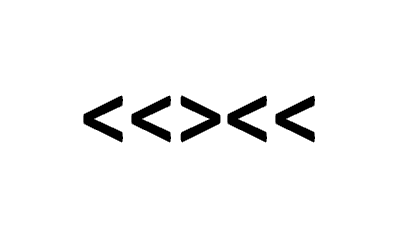

<!DOCTYPE html>
<html>
<head>
  <title> SciX </title>
  <script src="./js/jquery.min.js"></script>
  <script src="./js/jspsych.js"></script>
  <script src="./js/welcome.js"></script>
  <script src="./js/plugins/jspsych-instructions2.js"></script>
  <script src="./js/plugins/jspsych-fullscreen.js"></script>
  <script src="./js/plugins/jspsych-html-button-response.js"></script>
  <script src="./js/plugins/jspsych-RDK2.js"></script>
  <script src="./js/plugins/jspsych-rdk.js"></script>
  <script src="./js/plugins/jspsych-survey-multi-choice.js"></script>
  <script src="./js/plugins/jspsych-survey-multi-select.js"></script>
  <script src="./js/plugins/jspsych-html-keyboard-response.js"></script>
  <script src="./js/plugins/jspsych-html-button-response.js"></script>
  <script src="./js/plugins/jspsych-html-slider-response.js"></script>
  <script src="./js/plugins/jspsych-instructions-time-limit.js"></script>
  <script src="./js/plugins/jspsych-image-keyboard-response.js"></script>
  <script src="./js/plugins/jspsych-survey-likert.js"></script>
  <link rel="stylesheet" href="./js/css/jspsych.css"></link>

</head>
  <body>
    <center style = "position: fixed; top: 15%; width: 100%">
        <div id = "timer" style = "text-algin: center; visibility: hidden"/>
    </center>
    <center style ="text-align:center">
      <div id="jsPsych"></div>
    </center>
    <div id="welcome"></div>
  </body>
    <script>

///////////////////// NEED HELP /////////////////////
// why does it make you click the screen before recognizing keyboard respones - RDM and Flanker instructions and rdm

// necessary functions for MTurk and setting up display and saving data
  var timeline = [];

  var pid = Math.floor(Math.random() * 100000);

  var turkcode = (Math.floor(Math.random() * 899999) + 100000).toString();

  var filename = "SCIX_PID" + pid + "_turkcode_" + turkcode;

  function saveData(name, data){
  	var xhr = new XMLHttpRequest();
  	xhr.open('POST', 'save_data.php'); // 'write_data.php' is the path to the php file described above.
  	xhr.setRequestHeader('Content-Type', 'application/json');
  	xhr.send(JSON.stringify({filename: filename, filedata: data})); //specify a variable "filename"
  };

  function startExperiment(){

  	jsPsych.data.addProperties({
  		turkcode: turkcode,
  		pid: pid
  	});

    /* start the experiment */
    jsPsych.init({
      timeline: timeline,
      display_element: "jsPsych",
      //on_finish: function() {jsPsych.data.get().localSave('csv','scix.csv')} // uncomment to save to csv
      on_trial_finish: function(data){saveData(filename, jsPsych.data.get().csv())}  // uncomment to locally save data file as csv
    });
   };

/* change the display property of a set of objects */
  function setDisplay(theClass, theValue) {
     var i, classElements = document.getElementsByClassName(theClass);
     for (i = 0; i < classElements.length; i = i + 1) {
      classElements[i].style.display = theValue;
     }
  };

/*
  var end = {
    type: 'html-keyboard-response',
    stimulus: ['<h3>The experiment is over. <p>Thank you!</p></h3>'],
    choices: jsPsych.NO_KEYS,
    trial_duration: 1000
  };
*/
  var end = {
    type: 'html-button-response',
    timing_post_trial: 0,
	  button_html: '<button class="jspsych-btn" style="display:none">%choice%</button>',
    on_trial_start: function() { setTimeout(function() {setDisplay("jspsych-btn","")}, 5000000)},
    is_html: true,
    stimulus: '<h3>You\'re all finished - thank you for your help!</h3>' +
  	'<p>Your completion code is <span id="turkcode" style="font-weight:bold;font-size:115%">' + turkcode + '</span>. ' +
  	"You will be awarded the amount of <strong>$7.50</strong>.</p>" +
  	'To receive payment for the HIT, return to the Amazon Mechanical Turk page and enter this code. '+
  	'Please contact us if something goes wrong (unswcoglab@gmail.com) we\'ll fix it as quickly as possible.</p>',
    choices: ['Experiment over. You can now close this screen']
  };


/*set up welcome block*/
var welcome_instr = {
  type: 'html-button-response',
  stimulus: "Welcome to the experiment. <p> In this study, you will complete a total of 3 cognitive tasks and 3 brief questionnaires.</p> <p> You will receive further instructions at the start of each task.</p>",
  choices: ['Click here to read instruction for the first task']
}

///////////////// FLANKER TASK /////////////////
  function flanker(ntrial){
        /* experiment parameters */
        var reps_per_trial_type = ntrial;

        var rest_block = {
          type: 'html-button-response',
          stimulus: "Please feel free to take a short break.",
          post_trial_gap: 3000,
          choices: ['Click here to start the next block'],
          on_finish: function(data){
            data.exp = "rest";
          }
        }

        //set up instructions block
        var instructions_flanker = {
          type: "html-button-response",
          stimulus: "<p>In this task, you will see five arrows on the screen, like the example below.</p>" +
            "</img>" +
            '<p> Your task is to decide which direction the <strong> <font color="red"> middle arrow </strong></font> is pointing.' +
            "<p>Press the left arrow key if the middle arrow is pointing left. (<)</p>" +
            "<p>Press the right arrow key if the middle arrow is pointing right. (>)</p>" +
            "<p>There will be a total of 4 blocks. You will have a chance to take a short break in between each block.</p>" +
            "<p>Once you click the button below, the first trial will start automatically in 3 seconds, so make sure to have your fingers placed on the left and right arrow keys.</p>",
          post_trial_gap: 3000,
          choices: ['Click here to begin']
        };

        /*defining stimuli*/
        var test_stimuli_flanker = [
          {
            stimulus: "img/con1.png",
            data: { stim_type: 'congruent', direction: 'left'}
          },
          {
            stimulus: "img/con2.png",
            data: { stim_type: 'congruent', direction: 'right'}
          },
          {
            stimulus: "img/inc1.png",
            data: { stim_type: 'incongruent', direction: 'right'}
          },
          {
            stimulus: "img/inc2.png",
            data: { stim_type: 'incongruent', direction: 'left'}
          }
        ];

        var shuf_flanker = jsPsych.randomization.repeat(test_stimuli_flanker, ntrial);
        /* defining test timeline */
        var test_flanker = {
          timeline: [{
            type: 'image-keyboard-response',
            choices: [37, 39],
            trial_duration: 1500,
            stimulus: jsPsych.timelineVariable('stimulus'),
            data: jsPsych.timelineVariable('data'),
            on_finish: function(data){
              var correct = false;
              if(data.direction == 'left' &&  data.key_press == 37 && data.rt > -1){
                correct = true;
              } else if(data.direction == 'right' && data.key_press == 39 && data.rt > -1){
                correct = true;
              }
              data.correct = correct;
              data.exp = "flanker";
            },
            post_trial_gap: function() {
                return Math.floor(Math.random() * 1500) + 500;
            }
          }],
          timeline_variables: shuf_flanker//,
          //sample: {type: 'fixed-repetitions', size: reps_per_trial_type}
        };

    var flanker_all = [instructions_flanker, test_flanker, rest_block, test_flanker, rest_block, test_flanker, rest_block, test_flanker] //  ,test_flanker, rest_block, test_flanker, rest_block, test_flanker
    return(flanker_all)
}

///////////// CRT /////////////

  function crt() {
    var instructions_crt = {
      type: "html-button-response",
      stimulus: "<p>In this task, you will be presented with 6 comprehension problems. </p>" +
        "<p>All of the problems are multiple choice, so it is up to you to select the answer you think is correct. </p>",
      post_trial_gap: 1000,
      choices: ['Click here to begin the first comprehension problem']
    };

    var q1 = ["29", "30", "31"]; var shuf_q1 = jsPsych.randomization.repeat(q1, 1);
    var corr_resp1 = "29";

    var crt1 = {
      type: "html-button-response",
      stimulus: '<p>Jerry received both the 15th highest and the 15th lowest mark in the class. How many students are in the class?</p>',
      choices: shuf_q1,
      on_finish: function(data){
        var pressed = jsPsych.data.get().last(1).values()[0].button_pressed;
        var chosen = shuf_q1[pressed];
        data.chosen = chosen;
        data.corr = corr_resp1;
        if (data.chosen == data.corr){
        data.correct = 1
        } else {
        data.correct = 0
        };
        data.exp = "crt"
        data.stim = "mark"
      }
    };

    var q2 = ["$0 dollars", "$10 dollars", "$20 dollars"]; var shuf_q2 = jsPsych.randomization.repeat(q2, 1);
    var corr_resp2 = "$20 dollars";

    var crt2 = {
      type: "html-button-response",
      stimulus: '<p> A man buys a pig for $60, sells it for $70, buys it back for $80, and sells it finally for $90. How much has he made?</p>',
      choices: shuf_q2,
      on_finish: function(data){
        var pressed = jsPsych.data.get().last(1).values()[0].button_pressed;
        var chosen = shuf_q2[pressed];
        data.chosen = chosen;
        data.corr = corr_resp2;
        if (data.chosen == data.corr){
        data.correct = 1
        } else {
        data.correct = 0
        };
        data.exp = "crt"
        data.stim = "pig"
      }
    };

    var q3 = ["4 days", "9 days", "10 days"]; var shuf_q3 = jsPsych.randomization.repeat(q3, 1);
    var corr_resp3 = "4 days";

    var crt3 = {
      type: "html-button-response",
      stimulus: '<p> If John can drink one barrel of water in 6 days, and Mary can drink one barrel of water in 12 days, how long would it take them to drink one barrel of water together?</p>',
      choices: shuf_q3,
      on_finish: function(data){
        var pressed = jsPsych.data.get().last(1).values()[0].button_pressed;
        var chosen = shuf_q3[pressed];
        data.chosen = chosen;
        data.corr = corr_resp3;
        if (data.chosen == data.corr){
        data.correct = 1
        } else {
        data.correct = 0
        };
        data.exp = "crt"
        data.stim = "water"
      }
    };

    var q4 = ["6", "7", "8"]; var shuf_q4 = jsPsych.randomization.repeat(q4, 1);
    var corr_resp4 = "8";

    var crt4 = {
      type: "html-button-response",
      stimulus: '<p> A farmer had 15 sheep and all but 8 died. How many are left? </p>',
      choices: shuf_q4,
      on_finish: function(data){
        var pressed = jsPsych.data.get().last(1).values()[0].button_pressed;
        var chosen = shuf_q4[pressed];
        data.chosen = chosen;
        data.corr = corr_resp4;
        if (data.chosen == data.corr){
        data.correct = 1
        } else {
        data.correct = 0
        };
        data.exp = "crt"
        data.stim = "sheep"
      }
    };

    var q5 = ["3", "6", "9"]; var shuf_q5 = jsPsych.randomization.repeat(q5, 1);
    var corr_resp5 = "3";

    var crt5 = {
      type: "html-button-response",
      stimulus: '<p> If three elves can wrap three toys in an hour, how many elves are needed to wrap six toys in 2 hours? </p>',
      choices: shuf_q5,
      on_finish: function(data){
        var pressed = jsPsych.data.get().last(1).values()[0].button_pressed;
        var chosen = shuf_q5[pressed];
        data.chosen = chosen;
        data.corr = corr_resp5;
        if (data.chosen == data.corr){
        data.correct = 1
        } else {
        data.correct = 0
        };
        data.exp = "crt"
        data.stim = "elves"
      }
    };

    var q6 = ["15", "20", "30"]; var shuf_q6 = jsPsych.randomization.repeat(q6, 1);
    var corr_resp6 = "15";

    var crt6 = {
      type: "html-button-response",
      stimulus: '<p> In an athletics team, tall members are three times more likely to win a medal than short members. This year the team has won 60 medals so far. How many of these have been won by short athletes?</p>',
      choices: shuf_q6,
      on_finish: function(data){
        var pressed = jsPsych.data.get().last(1).values()[0].button_pressed;
        var chosen = shuf_q6[pressed];
        data.chosen = chosen;
        data.corr = corr_resp6;
        if (data.chosen == data.corr){
        data.correct = 1
        } else {
        data.correct = 0
        };
        data.exp = "crt"
        data.stim = "athletes"
      }
    };

    var crt_rand_q = [crt1, crt2, crt3, crt4, crt5, crt6]; var shuf_qs = jsPsych.randomization.repeat(crt_rand_q, 1);
    var crt_all = [instructions_crt, shuf_qs[0], shuf_qs[1], shuf_qs[2], shuf_qs[3], shuf_qs[4], shuf_qs[5]]
    return(crt_all)
  }

///////////// RDM /////////////
var fixation_test = {
  type: 'html-keyboard-response',
  stimulus: '<div style="font-size:60px;">+</div>',
  choices: jsPsych.NO_KEYS,
  trial_duration: 2000,
  }

  function rdm(n_trial) {

    var instructions_rdm = {
      type: "html-button-response",
      stimulus: "<p>In this task, you will see dots moving in different directions with a proportion consistently moving either to the left or right. </p>" +
        '<p> Your task is to detect which direction the majority of the dots are moving. Some trials will be easier than others. </p>' +
        '<p> You will use the keyboard to make your responses. </p>' +
        '<p> <strong> <font color="red">If you think more of the dots are moving to the left, push the "A" key. </strong></font> </p>' +
        '<p> <strong> <font color="red">If you think more of the dots are moving to the right, push the "L" key.  </strong></font> </p>' +
        "<p> Once you click the button below, the first trial will start automatically in 3 seconds, so make sure to have your fingers placed on the A and L keys. </p>",
      post_trial_gap: 3000,
      choices: ['Click here to begin the first trial']
    };

    /*var fixation_test = {
      type: 'html-keyboard-response',
      stimulus: '<div style="font-size:60px;">+</div>',
      choices: jsPsych.NO_KEYS,
      trial_duration: 2000,
    }*/
    //The test block where all the trials are nested. The properties here will trickle down to all trials in the timeline unless they have their own properties defined
    var RDK_trials = [
                        {correct_choice: 'l', coherent_direction: 0, coherence: 0.02, data: {direction: 'right', exp: 'rdm', ease: 'hard'}},
                        {correct_choice: 'l', coherent_direction: 0, coherence: 0.25, data: {direction: 'right', exp: 'rdm', ease: 'easy'}},
                        {correct_choice: 'a', coherent_direction: 180, coherence: 0.02, data: {direction: 'left', exp: 'rdm', ease: 'hard'}},
                        {correct_choice: 'a', coherent_direction: 180, coherence: 0.25, data: {direction: 'left', exp: 'rdm', ease: 'easy'}}
                    ];
    var shuf_rdm = jsPsych.randomization.repeat(RDK_trials, n_trial);

    var rest_block = {
      type: 'html-button-response',
      stimulus: "Please feel free to take a short break.",
      post_trial_gap: 3000,
      choices: ['Click here to start the next block'],
      on_finish: function(data){
        data.exp = "rest";
      }
    }

    var test_block = {
      type: "rdk",
      post_trial_gap: 500, //The Inter Trial Interval. You can either have no ITI, or have an ITI but change the display element to be the same color as the stimuli background to prevent flashing between trials
      number_of_dots: 500, //Total number of dots in each aperture
      RDK_type: 3, //The type of RDK used
      choices: ["a", "l"], //Choices available to be keyed in by participant
      trial_duration: 10000, //Duration of each trial in ms
      timeline: shuf_rdm, //The timeline of all the trials
      background_color: "white",
      dot_color: "grey",
      coherence: jsPsych.timelineVariable("coherence"),
      correct_choice: jsPsych.timelineVariable("correct_choice"),
    	coherent_direction: jsPsych.timelineVariable("coherent_direction"),
      data: jsPsych.timelineVariable("data"),
    }

    var rdm_all = [instructions_rdm, test_block, rest_block, test_block, rest_block, test_block, rest_block, test_block] //, test_block, rest_block, test_block, rest_block, test_block
    return(rdm_all)
  }

///////////// DEMOGRAPHICS /////////////
      var dem_1_options = ["Under 18", "18-24 years old", "25-34 years old", "35-44 years old", "45-54 years old", "over 55"];
      var dem_2_options = ["Male", "Female", "Other", "Prefer not to say"];
      var dem_3_options = ["Less than a high school diploma", "High school degree or equivalent", "Bachelor's degree", "Master's degree", "Doctorate"];
      var dem_4_options = ["Yes", "No"];
      var dem_5_options = ["0-6", "7-9", "10-12", "Over 12"];
      var dem_6_options = ["Morning", "Afternoon/Evening", "Night"];

      var demo_survey = {
          type: 'survey-multi-choice',
          preamble: 'Please respond to the following additional demographic questions.',
          questions: [{prompt: "What is your age?", options: dem_1_options, required:true,},
          {prompt: "What is your gender?", options: dem_2_options, required: true},
          {prompt: "What is the highest degree or level of school you have completed?", options: dem_3_options, required: true},
          {prompt: "Are you fluent in more than one language?", options: dem_4_options, required: true},
          {prompt: "How many hours of sleep did you get last night?", options: dem_5_options, required: true},
        {prompt: "What time of day is it?", options: dem_6_options, required: true}],
          on_finish: function(data){
            data.exp = "dem"
          },
      };


///////////// BARRATT IMPULSIVITY SCALE (30 items) /////////////

  var scale = ["Rarely/Never", "Occasionally", "Often", "Almost Always/Always"];
  var scale_1 = "I plan tasks carefully." //reversed
  var scale_2 = "I do things without thinking."
  var scale_3 = "I make-up my mind quickly."
  var scale_4 = "I am happy-go-lucky."
  var scale_5 = 'I do not "pay attention".'
  var scale_6 = 'I have "racing" thoughts.'
  var scale_7 = "I plan trips well ahead of time." //reversed
  var scale_8 = "I am self-controlled." //reversed
  var scale_9 = "I concentrate easily." //reversed
  var scale_10 = "I save regularly." //reversed
  var scale_11 = 'I "squirm" at plays or lectures.'
  var scale_12 = "I am a careful thinker." //reversed
  var scale_13 = "I plan for job security." //reversed
  var scale_14 = "I say things without thinking."
  var scale_15 = "I like to think about complex problems." //reversed
  var scale_16 = 'I change jobs.'
  var scale_17 = 'I act "on impulse".'
  var scale_18 = "I get easily bored when solving thought problems."
  //var scale_19 = ''
  var scale_20 = 'I act on the spur of the moment.'
  var scale_21 = "I am a steady thinker." //reversed
  var scale_22 = "I change residences."
  var scale_23 = "I buy things on impulse."
  var scale_24 = "I can only think about one problem at a time."
  var scale_25 = "I change hobbies."
 //var scale_26 = ""
  //var scale_27 = ""
  var scale_28 = "I spend or charge more than I earn."
  //var scale_29 = ""
  var scale_30 = 'I often have extraneous thoughts when thinking.'
  var scale_31 = "I am more interested in the present than the future."
  var scale_32 = "I am restless at the theater or lectures."
  var scale_33 = "I like puzzles." //reversed
  var scale_34 = "I am future oriented." //reversed

  var bis_survey = {
      type: 'survey-likert',
      preamble: '<p><strong> <font color="red"> People differ in the ways they act and think in different situation. These statements measure some of the ways in which you think and act.</p>' +
      '<p> Read each statement and select how often this applies to you. Do not spend too much time on any statement. </p>' +
      '<p> Answer quickly and honestly. </strong> </font> </p>',
      questions: [{prompt: scale_1, labels: scale, required: true}, //data: {Q: 1, Reverse: true}
                  {prompt: scale_2, labels: scale, required: true},
                  {prompt: scale_3, labels: scale, required: true},
                  {prompt: scale_4, labels: scale, required: true},
                  {prompt: scale_5, labels: scale, required: true},
                  {prompt: scale_6, labels: scale, required: true},
                  {prompt: scale_7, labels: scale, required: true},
                  {prompt: scale_8, labels: scale, required: true},
                  {prompt: scale_9, labels: scale, required: true},
                  {prompt: scale_10, labels: scale, required: true},
                  {prompt: scale_11, labels: scale, required: true},
                  {prompt: scale_12, labels: scale, required: true},
                  {prompt: scale_13, labels: scale, required: true},
                  {prompt: scale_14, labels: scale, required: true},
                  {prompt: scale_15, labels: scale, required: true},
                  {prompt: scale_16, labels: scale, required: true},
                  {prompt: scale_17, labels: scale, required: true},
                  {prompt: scale_18, labels: scale, required: true},
                  {prompt: scale_20, labels: scale, required: true},
                  {prompt: scale_21, labels: scale, required: true},
                  {prompt: scale_22, labels: scale, required: true},
                  {prompt: scale_23, labels: scale, required: true},
                  {prompt: scale_24, labels: scale, required: true},
                  {prompt: scale_25, labels: scale, required: true},
                  {prompt: scale_28, labels: scale, required: true},
                  {prompt: scale_30, labels: scale, required: true},
                  {prompt: scale_31, labels: scale, required: true},
                  {prompt: scale_32, labels: scale, required: true},
                  {prompt: scale_33, labels: scale, required: true},
                  {prompt: scale_34, labels: scale, required: true}
                  ],
      on_finish: function(data){
        data.exp = "bis"
      },
  };

  ///////////// Brief Self-Control SCALE (13 items) /////////////

  var sc_scale = ["1: Not at all", "2", "3", "4", "5: Very Much"];
  var sc_scale_1 = "I am good at resisting temptation."
  var sc_scale_2 = "I have a hard time breaking bad habits." //reversed
  var sc_scale_3 = "I am lazy." //reversed
  var sc_scale_4 = "I say inappropriate things." //reversed
  var sc_scale_6 = 'I do certain things that are bad for me, if they are fun.' //reversed
  var sc_scale_13 = 'I refuse things that are bad for me.'
  var sc_scale_17 = "I wish I had more self-discipline." //reversed
  var sc_scale_22 = "People would say that I have iron self-discipline."
  var sc_scale_28 = "Pleasure and fun sometimes keep me from getting work done." //reversed
  var sc_scale_29 = "I have trouble concentrating." //reversed
  var sc_scale_30 = 'I am able to work effectively toward long-term goals.'
  var sc_scale_31 = "Sometimes I can't stop myself from doing something, even if I know it is wrong." //reversed
  var sc_scale_32 = "I often act without thinking through all the alternatives." //reversed

  var self_control_survey = {
      type: 'survey-likert',
      preamble: '<strong> <font color="red"> Using the scale provided, please indicate how much each of the following statements reflects how you typically are.</strong> </font>',
      questions: [{prompt: sc_scale_1, labels: sc_scale, required: true},
                  {prompt: sc_scale_2, labels: sc_scale, required: true},
                  {prompt: sc_scale_3, labels: sc_scale, required: true},
                  {prompt: sc_scale_4, labels: sc_scale, required: true},
                  {prompt: sc_scale_6, labels: sc_scale, required: true},
                  {prompt: sc_scale_13, labels: sc_scale, required: true},
                  {prompt: sc_scale_17, labels: sc_scale, required: true},
                  {prompt: sc_scale_22, labels: sc_scale, required: true},
                  {prompt: sc_scale_28, labels: sc_scale, required: true},
                  {prompt: sc_scale_29, labels: sc_scale, required: true},
                  {prompt: sc_scale_30, labels: sc_scale, required: true},
                  {prompt: sc_scale_31, labels: sc_scale, required: true},
                  {prompt: sc_scale_32, labels: sc_scale, required: true}
                  ],
      on_finish: function(data){
        data.exp = "self-control"
      },
  };

///////////// BIG 5 - SHORT (15 items) /////////////
var big5_scale = ["Disagree strongly", "Disagree a little", "Neither agree nor disagree", "Agree a little", "Agree strongly"];
var big5_scale_1 = "Worries a lot" //N
var big5_scale_2 = "Gets nervous easily" //N
var big5_scale_3 = "Remains calm in tense situations" //N reversed
var big5_scale_4 = "Is talkative" //E
var big5_scale_5 = "Is outgoing, sociable" //E
var big5_scale_6 = "Is reserved" //E reversed
var big5_scale_7 = "Is original, comes up with new ideas" //O
var big5_scale_8 = "Values artistic, aesthetic experiences" //O
var big5_scale_9 = "Has an active imagination" //O
var big5_scale_10 = "Is sometimes rude to others" //A reversed
var big5_scale_11 = "Has a forgiving nature" //A
var big5_scale_12 = "Is considerate and kind to almost everyone" //A
var big5_scale_13 = "Does a thorough job" //C
var big5_scale_14 = "Tends to be lazy" //C reversed
var big5_scale_15 = "Does things efficiently" //C

var big5_survey = {
    type: 'survey-likert',
    preamble: '<strong> <font color="red">Here are a number of characteristics that may or may not apply to you. Please indicate the extent to which you agree or disagree with the following statements.</strong> </font>',
    questions: [{prompt: big5_scale_1, labels: big5_scale, required: true}, //data: {Q: 1, Reverse: true}
                {prompt: big5_scale_2, labels: big5_scale, required: true},
                {prompt: big5_scale_3, labels: big5_scale, required: true},
                {prompt: big5_scale_4, labels: big5_scale, required: true},
                {prompt: big5_scale_5, labels: big5_scale, required: true},
                {prompt: big5_scale_6, labels: big5_scale, required: true},
                {prompt: big5_scale_7, labels: big5_scale, required: true},
                {prompt: big5_scale_8, labels: big5_scale, required: true},
                {prompt: big5_scale_9, labels: big5_scale, required: true},
                {prompt: big5_scale_10, labels: big5_scale, required: true},
                {prompt: big5_scale_11, labels: big5_scale, required: true},
                {prompt: big5_scale_12, labels: big5_scale, required: true},
                {prompt: big5_scale_13, labels: big5_scale, required: true},
                {prompt: big5_scale_14, labels: big5_scale, required: true},
                {prompt: big5_scale_15, labels: big5_scale, required: true}
                ],
    on_finish: function(data){
      data.exp = "big5"
    },
};

        /*set up experiment structure*/

        timeline.push({
          type: 'fullscreen',
          fullscreen_mode: true
        });

// order the same for all participants: CRT, flanker, rdm, demographics, BIS, self-control, Big5
       timeline.push(welcome_instr);

       var crt_exp = crt()
       for(var i=0; i<crt_exp.length; i++){
         timeline.push(crt_exp[i])
       }

       var flanker_exp = flanker(ntrial=12)
       for(var i=0; i<flanker_exp.length; i++){
         timeline.push(flanker_exp[i])
       }

        var rdm_exp = rdm(ntrial=12)
        for(var i=0; i<rdm_exp.length; i++){
          timeline.push(rdm_exp[i])
        }

        timeline.push(demo_survey);
        timeline.push(bis_survey);
        timeline.push(self_control_survey);
        timeline.push(big5_survey);
        timeline.push(end);

    welcome.run()
    </script>
</html>
